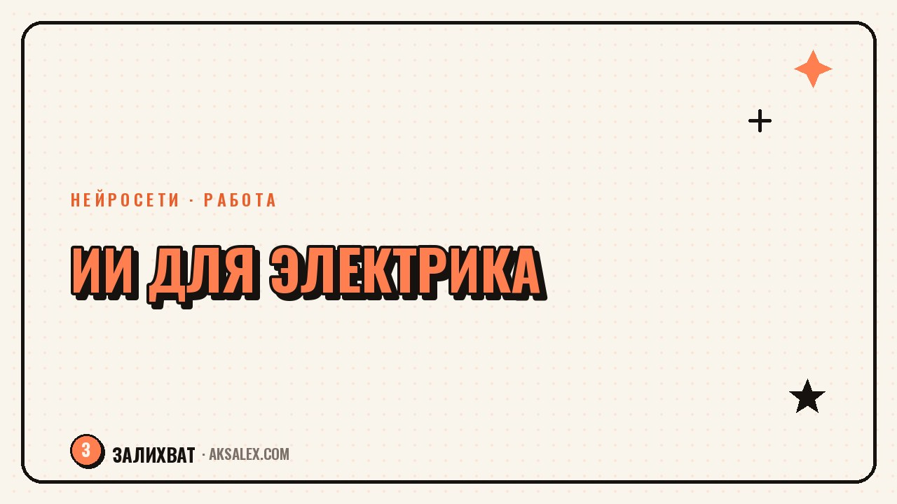

Нейросети для электрика: расчёты и документы

Электрик редко думает о нейросетях как об инструменте - у него в руках прозвонка и кроссы, а не ноутбук с ChatGPT. Но часть рутины, которая съедает вечера после смен, можно скинуть на ИИ: расчёт сечения кабеля, оформление акта скрытых работ, смета для заказчика, ответ клиенту в мессенджере. Разбираем, что из этого реально работает, а что годится только как черновик, который проверяешь сам.
Зачем электрику нейросети, если есть ПУЭ и калькуляторы
У электрика и так есть таблицы ПУЭ, онлайн-калькуляторы сечения и шаблоны смет в Excel. Нейросеть не заменяет нормативы - она ускоряет работу с текстом вокруг основной задачи. Пока ты сам считаешь нагрузку по формуле, ИИ может параллельно собрать акт, перевести заметки в отчёт для клиента или написать ответ на претензию.
Где граница ответственности
Любой расчёт нагрузки, сечения кабеля или номинала автомата, который выдала нейросеть, нужно проверять по нормативным таблицам самому. Модель может перепутать единицы измерения или взять устаревшую методику - цена ошибки в электрике слишком высока, чтобы доверять черновику напрямую.
Расчёт нагрузки и подбор кабеля через чат с ИИ
Частый сценарий - прикинуть сечение кабеля под мощность приборов на объекте. Ты описываешь нагрузку текстом: варочная панель на 7 кВт, духовой шкаф, стиральная машина, длина трассы 18 метров, прокладка в гофре по стене. Нейросеть за секунды выдаёт черновой расчёт с номиналом автомата и сечением - а ты сверяешь цифры с таблицей допустимых токов и правишь, если что-то не совпало.
- Описывай нагрузку конкретно: мощность каждого прибора, длину линии, способ прокладки
- Проси модель показать формулу, а не только итоговое число
- Сверяй итог с таблицей ПУЭ вручную
- Сохраняй удачные запросы как шаблон - следующий расчёт займёт меньше минуты
Нейросеть - это быстрый черновик, а не замена инженерного расчёта. Подписываешь акт ты, а не модель.
Документы: акты, сметы и переписка с заказчиком
Вторая частая задача - бумаги. Акт скрытых работ, смета на материалы и работу, короткое техзадание для бригады - всё это текст по шаблону, и такие задачи нейросеть решает быстрее человека. Задаёшь структуру один раз, а дальше подставляешь объект, адрес и перечень работ.
Готовый сценарий для сметы
Описываешь объект (квартира, 60 м², новая разводка на 12 точек) и список материалов - получаешь черновик сметы таблицей с позициями и суммой. Остаётся поправить цены под регион, вместо того чтобы собирать таблицу в Excel с нуля.
| Сервис | Что удобно | Минус |
|---|---|---|
| ChatGPT | Держит контекст объекта, пишет акты и сметы по шаблону | Бесплатная версия ограничивает запросы |
| Яндекс Алиса Pro | Отвечает на русском без VPN | Слабее в точных расчётах |
| GigaChat | Бесплатный лимит побольше | Путается в узких нормативах |
| Claude | Хорошо работает с длинными документами | Доступ из России через сторонние сервисы |
Переписка с клиентами и объявления об услугах
Если берёшь частные заказы, часть дня уходит на переписку: объяснить цену, вежливо отказать на неадекватный срок, написать объявление в соседский чат. Нейросеть пишет такие тексты за минуту, тебе остаётся проверить тон.
Шаблон объявления
Опиши модели специализацию (монтаж под ключ, замена автоматов, подключение техники), район и сроки - получишь черновик объявления для Авито или соседских чатов, останется дополнить фото работ.
Ошибки при первом использовании
Главная ошибка - доверять расчётам ИИ без проверки по нормативам. Вторая - расплывчатые запросы вроде «посчитай кабель для квартиры» без цифр по нагрузке и длине трассы. Третья - не сохранять удачные формулировки, из-за чего каждый раз объясняешь задачу заново.
- Не копируй расчёт в акт без собственной проверки
- Указывай конкретные цифры в запросе
- Заводи папку с удачными промптами для смет и актов
- Проверяй, что модель не придумала несуществующий пункт норматива
Частые вопросы
Можно ли доверять расчёту сечения кабеля от нейросети?
Черновик расчёта - можно, итоговое решение - нет. Любую цифру сечения или номинала автомата нужно проверить по таблицам ПУЭ или актуальному своду правил, прежде чем применять на объекте.
Какая нейросеть лучше подходит для составления смет?
Для таблиц и длинных документов удобны ChatGPT и Claude - они хорошо держат структуру. Если нужен бесплатный доступ без VPN, подойдёт GigaChat или Яндекс Алиса Pro, хотя точность расчётов там немного слабее.
Нужно ли электрику разбираться в промптах, чтобы это работало?
Специальных навыков не требуется - достаточно описывать задачу конкретно: с цифрами нагрузки, длиной линии и условиями прокладки. Чем точнее запрос, тем полезнее черновик на выходе.
Заменит ли ИИ инженера-проектировщика?
Нет, для сложных проектов (многоквартирные дома, промышленные объекты) всё равно нужен проектировщик с лицензией. Нейросеть полезна для частных заказов и бытовых расчётов, а не для проектной документации.
С чего начать, если раньше не пользовался нейросетями?
Начни с одной повторяющейся задачи - например, акта скрытых работ. Составь один раз шаблон запроса с нужной структурой, сохрани его, и дальше просто подставляй данные объекта под каждый новый случай.
Раз тема оказалась полезной, вот что почитать следующим. Почему свой голос на записи кажется чужим и как блогеру перестать стесняться и начать говорить в кадре.
Читать статью →а не вручную